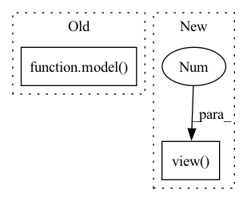

Pattern ID :16738

Before Change
with torch.no_grad():
if args.mlm:
outputs = model(inputs, masked_lm_labels=labels, position_ids=position_ids, token_type_ids=segment_ids)
else:
if args.model_type == "bart":
decoder_input_ids = labels[:, :-1].contiguous()
decoder_input_ids[decoder_input_ids == args.mlm_ignore_index] = tokenizer.pad_token_id
After Change
// Same behavior as modeling_bart.py, besides ignoring pad_token_id
ce_loss_fct = torch.nn.CrossEntropyLoss(ignore_index=args.mlm_ignore_index)
loss = ce_loss_fct(lm_logits.view(-1, lm_logits.shape[-1]), labels.view(-1))
eval_loss += loss.mean().item()
nb_eval_steps += 1
In pattern: SUPERPATTERN
Frequency: 3
Non-data size: 2
Instances
Fragment ID: 55976774
Project Name: stanford-oval/genienlp
Commit Name: b84a6548a69fd9f62652eed1c74fd4b1fdb8b65b
Time: 2020-11-15
Author: mehrad@stanford.edu
File Name: genienlp/paraphrase/run_lm_finetuning.py
M Class Name: AnonimousClass
N Class Name: AnonimousClass
M Method Name: evaluate(5)
N Method Name: evaluate(5)
M Parent Class:
N Parent Class:
M File Name: genienlp/paraphrase/run_lm_finetuning.py
N File Name: genienlp/paraphrase/run_lm_finetuning.py
M Start Line: 318
M End Line: 344
N Start Line: 330
N End Line: 369
'>
Before Change
target = y[:, 1:].contiguous().cuda()
teacher_forcing_rate = scheduler_sampling(epoch)
logits = model(x, ground_truth=y, teacher_forcing_rate=teacher_forcing_rate)
y_hats = torch.max(logits, dim=-1)[1]
//print(label_to_string(target, id2char))
loss = criterion(logits.view(-1, logits.size(-1)), target.view(-1))
After Change
preds = model(inputs. input_length, targets)
loss = criterion(preds.view(-1, preds.size(-1)), targets[:,1:].view(-1))
loss.backward()
nn.utils.clip_grad_norm_(model.parameters(), max_norm=max_norm)
optimizer.step()
'>
Fragment ID: 55976775
Project Name: qute012/kosr
Commit Name: fad0d9ba92dcbd3024650057784c0a484dc1f8e7
Time: 2021-01-28
Author: ejrwls012@gmail.com
File Name: kosr/trainer/trainer.py
M Class Name: AnonimousClass
N Class Name: AnonimousClass
M Method Name: train(6)
N Method Name: train(6)
M Parent Class:
N Parent Class:
M File Name: kosr/trainer/trainer.py
N File Name: kosr/trainer/trainer.py
M Start Line: 26
M End Line: 35
N Start Line: 26
N End Line: 35
'>
Before Change
data_time.update(time.time() - end_time)
targets = targets.to(device, non_blocking=True)
outputs = model(inputs)
loss = criterion(outputs, targets)
acc = calculate_accuracy(outputs, targets)
losses.update(loss.item(), inputs.size(0))
After Change
rpn_inputs = inputs.transpose(1,2).contiguous().view(N*T,C,H,W)
with torch.no_grad():
proposals = rpn(rpn_inputs)
proposals = torch.cat((proposals)).view(N,T,10,4)
outputs = model(inputs, proposals)
loss = criterion(outputs, targets)
acc = calculate_accuracy(outputs, targets)
'>
Fragment ID: 55976776
Project Name: jd730/strg
Commit Name: d10d7f32b949df4088e04b7571e91c54e4602b12
Time: 2020-06-10
Author: jdhwang730@gmail.com
File Name: training.py
M Class Name: AnonimousClass
N Class Name: AnonimousClass
M Method Name: train_epoch(12)
N Method Name: train_epoch(11)
M Parent Class:
N Parent Class:
M File Name: training.py
N File Name: training.py
M Start Line: 37
M End Line: 37
N Start Line: 24
N End Line: 46